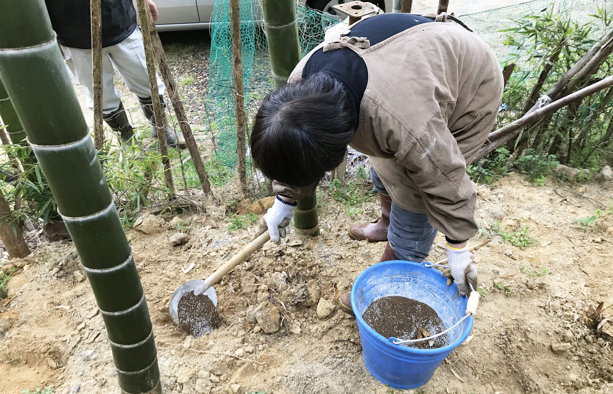
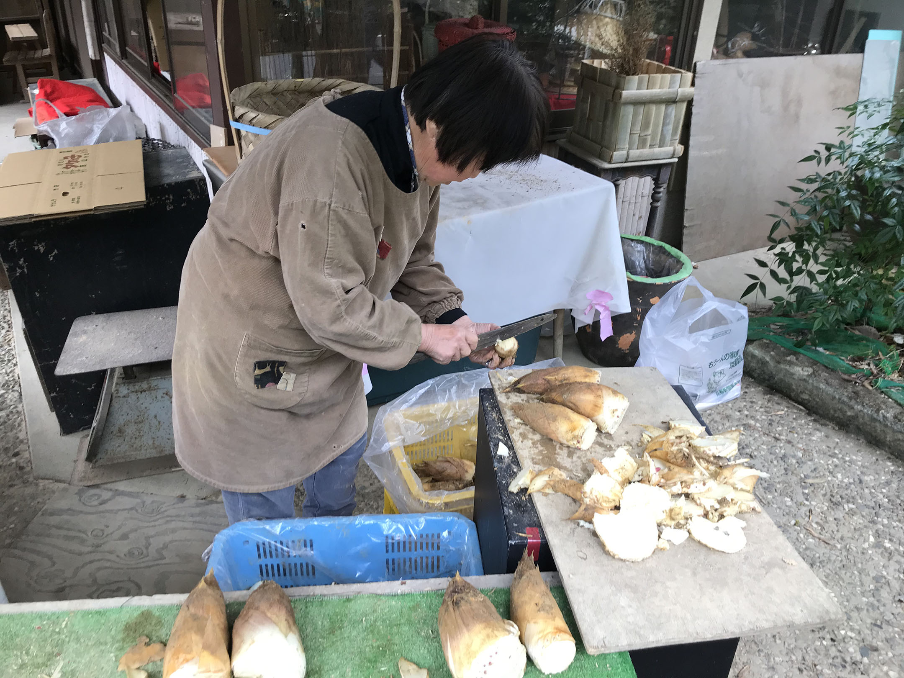

白子筍とは?

白子筍とは京都大原野地域で特殊な栽培方法で作ったタケノコのことです。
白子筍はアクがほぼ無く、さつまいものような強い甘みと芳醇な香り、そしてほどけるような柔らかい食感が特徴です。
白子筍の土づくり
白子筍を生産する竹林では竹粉や藁、肥料を加えることによって、フカフカでたくさんの養分を含んだ土づくりをしています。（通常のタケノコを収穫する竹林は基本、何も与えません。）
藁や竹粉を敷くことによって土中の酸素が増え、たけのこが大きく育つようになります。また、たけのこが曲がらずまっすぐ育つようになるので、掘るときにキズがつきにくいです
肥料は主に油かすや、窒素・リン・カリウムがバランスよく含まれた化学肥料を与えています。肥料を与えることによって光合成が盛んになり、たけのこに蓄えられる糖分の量が多くなります。
白子筍のこだわり
たけのこは日光を浴びるほどエグみが増していくと言われています。それゆえ、INOUE TAKENOKOでは土の中にある、日光があたる前のたけのこのみを取り扱っております。日光があたっていない証拠に、皮の色が薄く穂先が黄色になっています。
また、たけのこ販売をして数十年のベテランに目利きをしてもらい、価格に見合った質、大きさのたけのこを送らせていただきます。さらに硬い部分を切り落として可食部をできる限り増やしてお送りします。
アク抜きについて
たけのこはアク抜きをしてから料理に使います。アク抜きによって、アクがほぼ０になり（私は全く感じません）甘みがグッと増します。
アク抜きの方法はいたって簡単です。鍋に、ぬか（白子筍を購入すると付いてきます）・たっぷりの水・たけのこ、を入れて湯がくだけです。アク抜きと言ってもほとんどの時間はほったらかしなので、作業時間は１５分ほどです